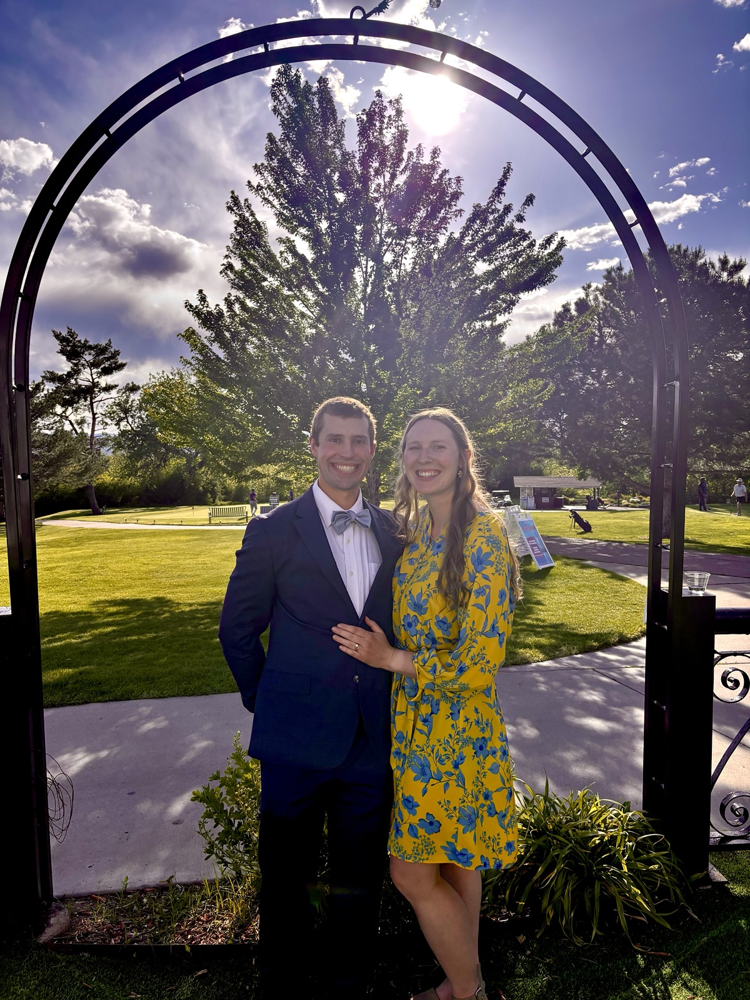
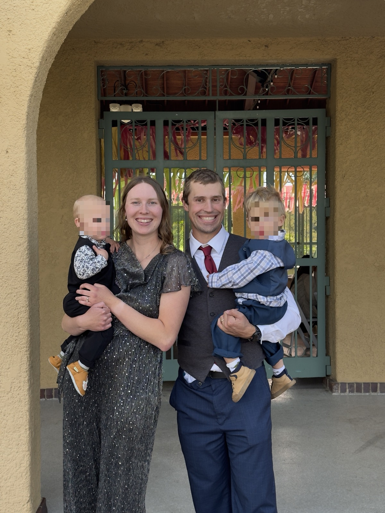

I'm a senior machine-learning engineer in Denver, Colorado, working where signal processing, perception, and applied AI meet — building systems that detect, classify, and geolocate signals and objects across RF, vision, and audio.
Most of my work is turning messy, real-world sensor data into something a model — and a person — can actually use: CNNs and transformers for modulation recognition and overhead imagery, classical-DSP-plus-ML hybrids, emitter geolocation, and multi-source fusion. Along the way I've curated multi-terabyte datasets, stood up self-hosted training and CI/CD, and deployed models to real hardware in the field — from FPGAs and NVIDIA Orin down to Raspberry-Pi-class devices. I hold an M.S. in Electrical Engineering and a B.S. in Engineering Physics.
Off the clock I'm a husband and dad, active in my local church, and happiest moving or making something — running (including the Colorado Marathon), woodworking, martial arts, and glassblowing. I'm an FAA-107 drone pilot and a relentless tinkerer, usually with a software-defined radio, a drone, or one too many side projects going at once.
# short bio
Gordon Gouger is a senior machine-learning engineer in Denver focused on intelligent sensing — detection, classification, and geolocation across RF, vision, and audio. An FAA-107 drone pilot, runner, and maker, he's active in his local church.
# photos

